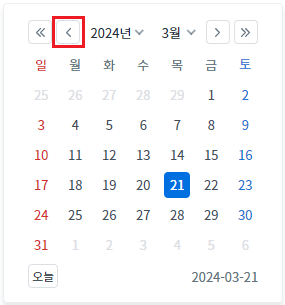
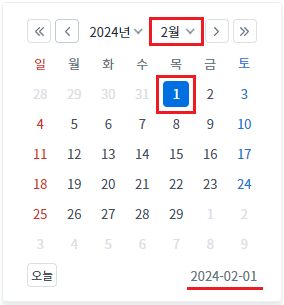
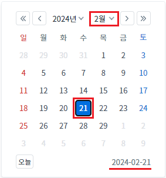
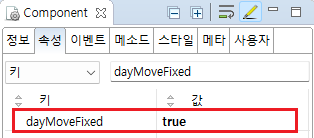

[InputCalendar] 달력 상단의 버튼을 사용하여 월이나 연도가 변경되었을 때, 선택된 일을 유지하기
1개요
InputCalendar의 'dayMoveFixed' 속성을 사용하여, 달력 상단의 버튼을 사용하여 월이나 연도가 변경되었을 때, 선택된 일이 유지되도록 설정한 예제입니다.
속성의 설정과 관계없이 달력의 Selectbox로 년(year),월(month) 수정 시 선택해 둔 일(day)은 유지됩니다.
2구현된 기능
달력의 버튼을 사용하여 연 또는 월이 변경되었을 때, 매월 1일이 선택
달력의 버튼을 사용하여 연 또는 월이 변경되었을 때, 현재 선택된 일을 유지
3예제 테스트 방법
3.1달력의 버튼을 사용하여 연 또는 월이 변경되었을 때, 매월 1일이 선택
예제 영역 '(기본 설정) dayMoveFixed - false'에서 테스트합니다.1
STEP 1: 달력 아이콘을 클릭합니다.
Image 1.브라우저(Chrome) 실행 예시 - 캘린더 아이콘

2
STEP 2: 달력 상단에 구성된 좌우 아이콘(<<, <, >, >>)을 클릭합니다.
Image 2.브라우저(Chrome) 실행 예시

3
STEP 3: 실행 결과를 확인합니다.
월이 변경되고 해당 월의 일자가 '1'로 선택됩니다.
Image 3.브라우저(Chrome) 실행 예시

3.2달력의 버튼을 사용하여 연 또는 월이 변경되었을 때, 현재 선택된 일을 유지
예제 영역 'dayMoveFixed - true 적용'에서 테스트합니다.1
STEP 1: 달력 아이콘을 클릭합니다.
Image 4.브라우저(Chrome) 실행 예시 - 캘린더 아이콘

2
STEP 2: 달력 상단에 구성된 좌우 아이콘(<<, <, >, >>)을 클릭합니다.
Image 5.브라우저(Chrome) 실행 예시
3
STEP 3: 실행 결과를 확인합니다.
월은 변경되고 일자는 유지되는 것을 확인합니다.
예를 들어 이전 선택 일자가 '21'이면 '21'이 선택됩니다.
Image 6.브라우저(Chrome) 실행 예시

4구현 예시
4.1달력의 버튼을 사용하여 연 또는 월이 변경되었을 때, 현재 선택된 일이 유지되도록 설정하기
1
InputCalendar의 속성을 정의합니다.
[필수] dayMoveFixed="true"
[default:false, true] 설정 값이 'true'이면 특정 일(Day)을 선택한 후, 달력 상단의 버튼을 사용하여 월이나 연도를 변경했을 때, 선택된 일을 유지할 수 있습니다.
설정 값이 'false'이면 매월 1일이 선택됩니다.
Image 7.웹스퀘어 스튜디오의 Component View - 속성 설정 예시

Example 1.Source
<!-- inputCalendar 의 소스 본문 예시 --> <w2:inputCalendar dayMoveFixed="true" id="ica_exam_1"> </w2:inputCalendar>
5주요 API
dayMoveFixed